Casting on
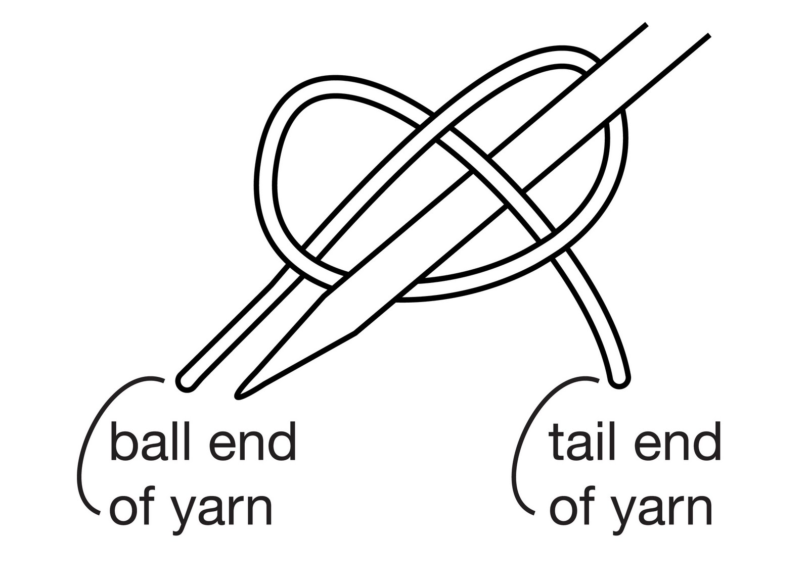 Every knitting project starts with casting on. To begin casting on, make a pretzel shape with the yarn. The needle will go under the middle right piece of yarn. Pull the yarn tight. This is the first stitch! Continue casting on until the desired amount of stitches are made on the knitting needle.
Knit and Purl Stitch
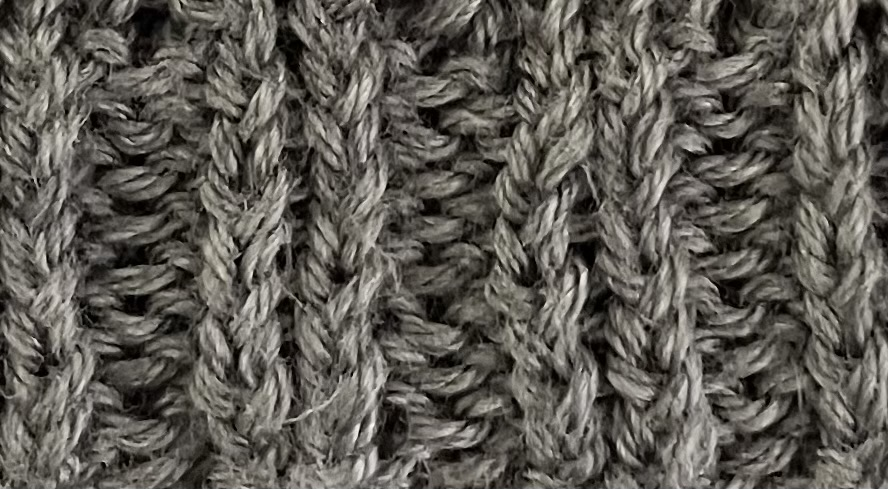 The classic stitch people think of when they invision knitting, is the knit stitch. It looks like a braid and is the easiest stitch. The purl stitch is the reverse of the knit stitch and it appears as ripples in the work. Many projects include a rib, which pairs the knit stitch with the purl stitch. Rib's are used for the bottom of a hat or mittens or cuffs of a sweater and many other projects. This picture is of a rib of a sweater. It is following a pattern of knit one purl one for a certain length.
Binding off
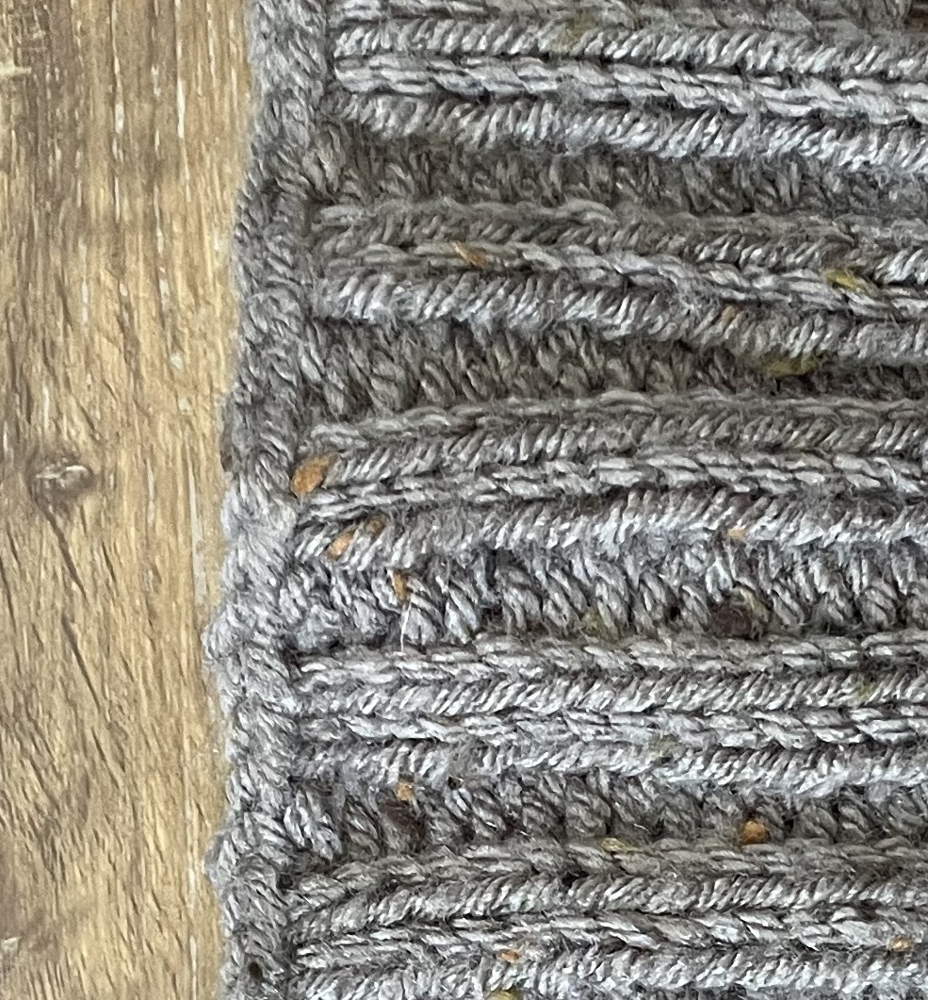 Binding off is essential for all projectst that end in closed edges. This basic way of binding off entails knitting two stitches (either knit stitch or purl stitch) and then taking the first stitch and dropping it from the needle. When the binding off is complete it leaves the top of the project looking like a braid. Some exceptions to this way of binding off are hats and bags. A hat and a bag both end in a closed area. The top of a hat or the bottom of a bag is where it is bound. For these projects the binding off is more similar to sewing. Threadig the excess yarn through the open stitches and then weaving the yarn through past stitches ending with tying a knot between the excess yarn and the project. This photo shows the binding off of a project that has been knitted in a knit purl pattern, similar to a rib.
 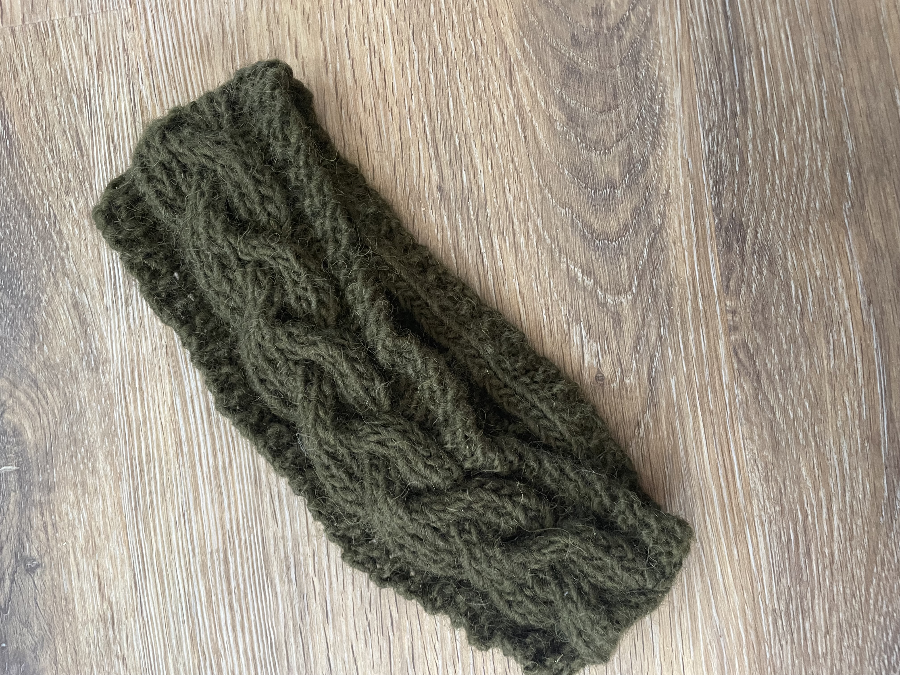
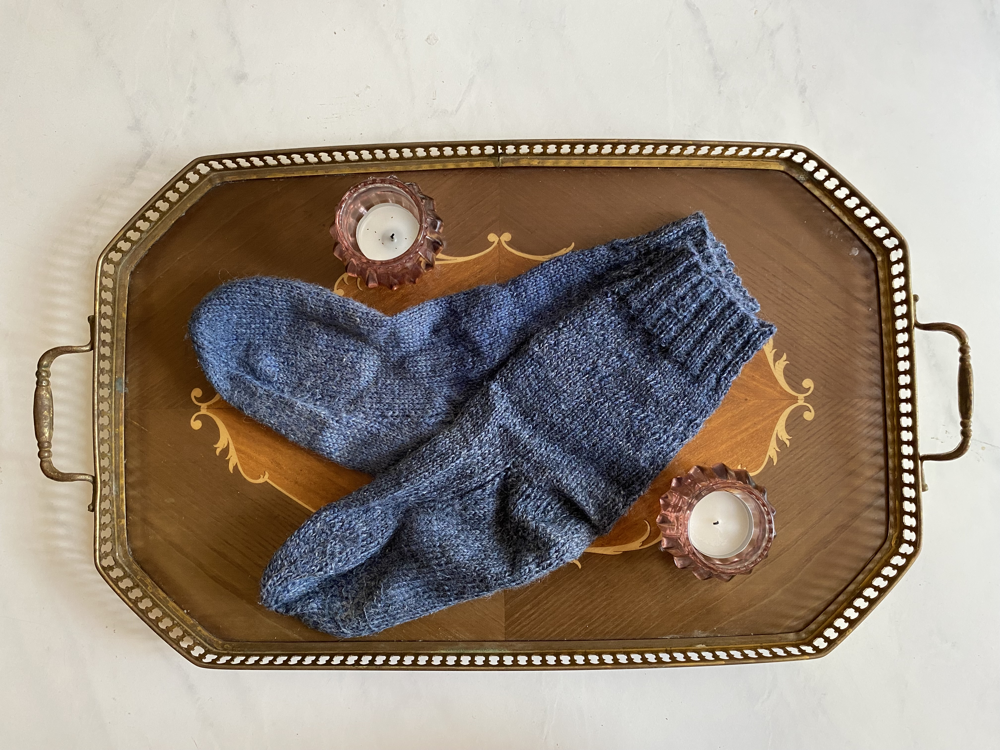
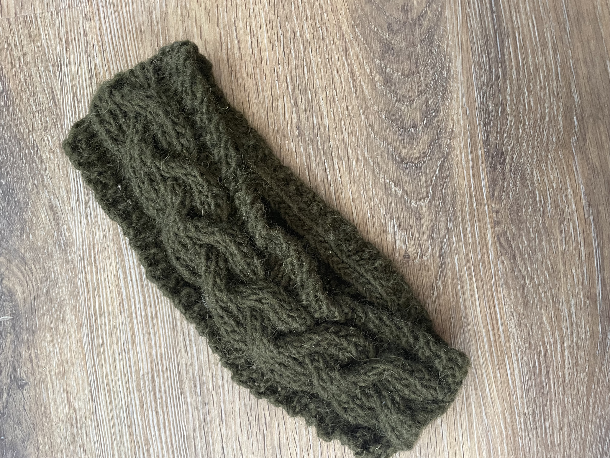
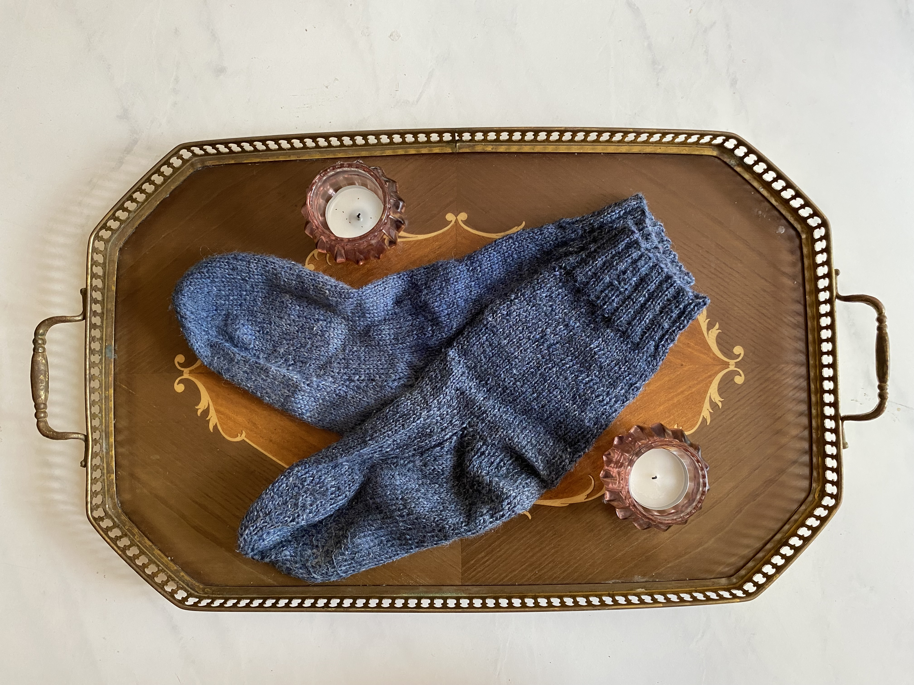
 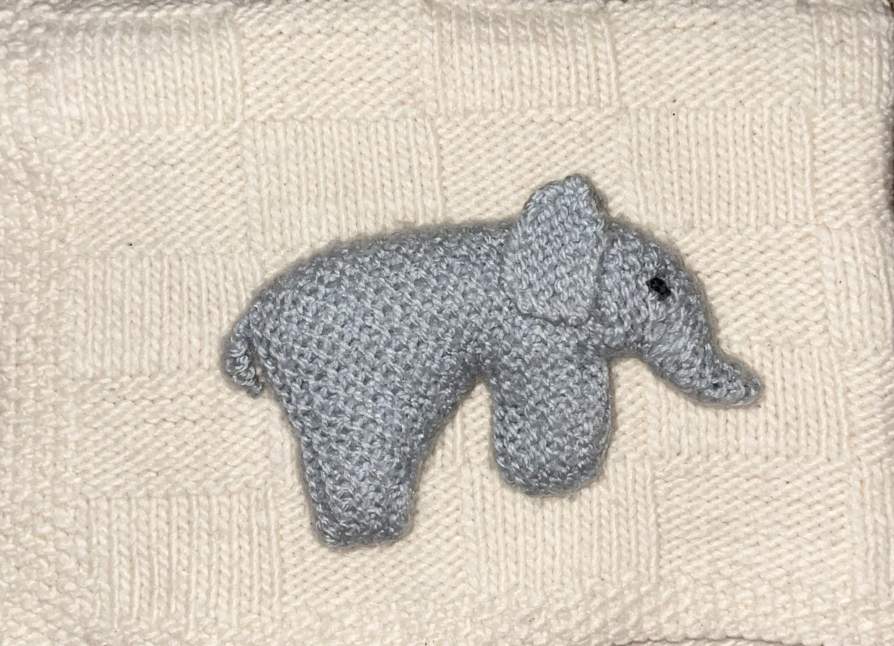
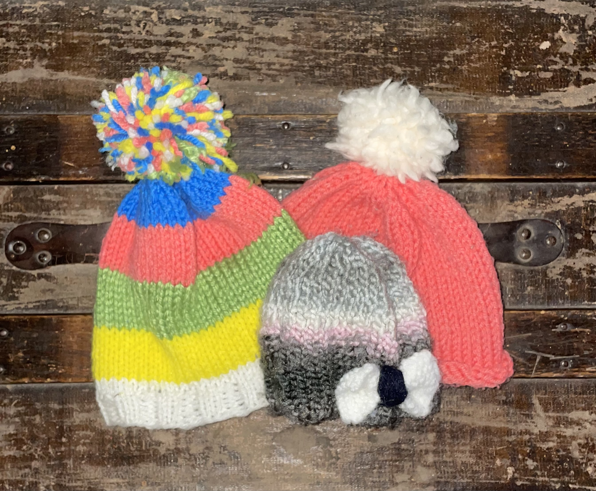
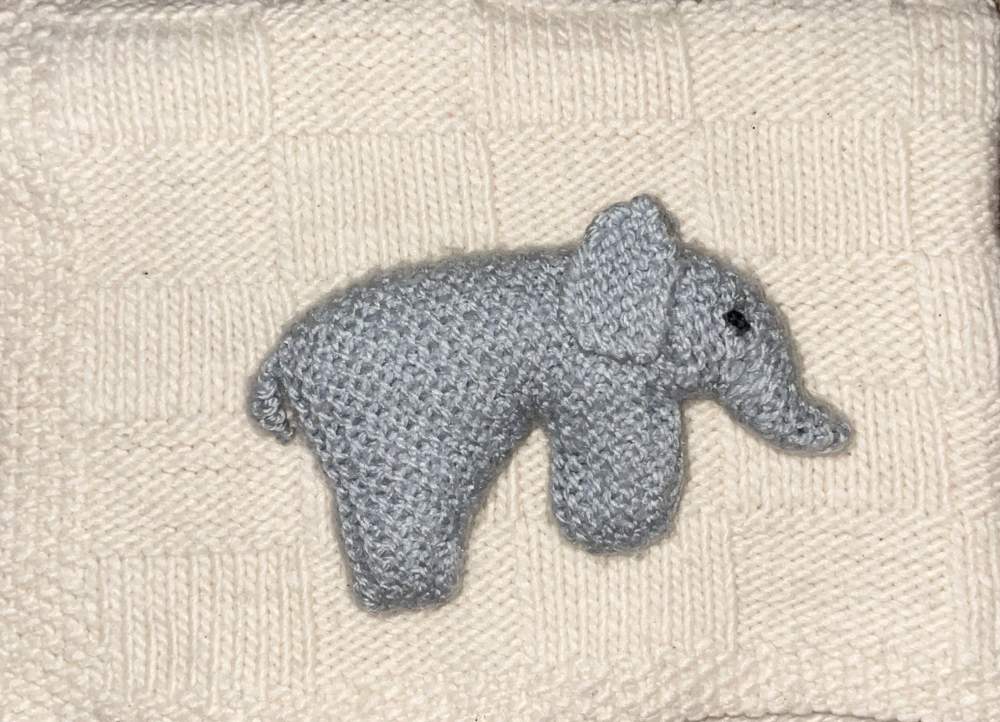
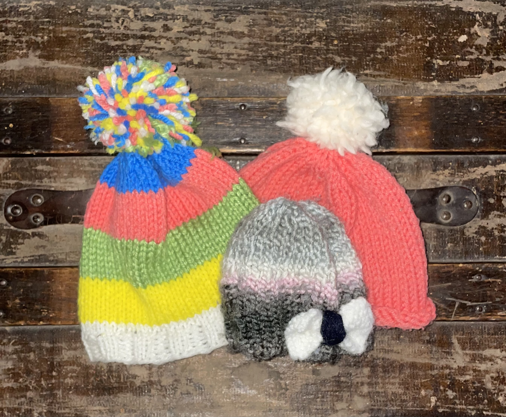